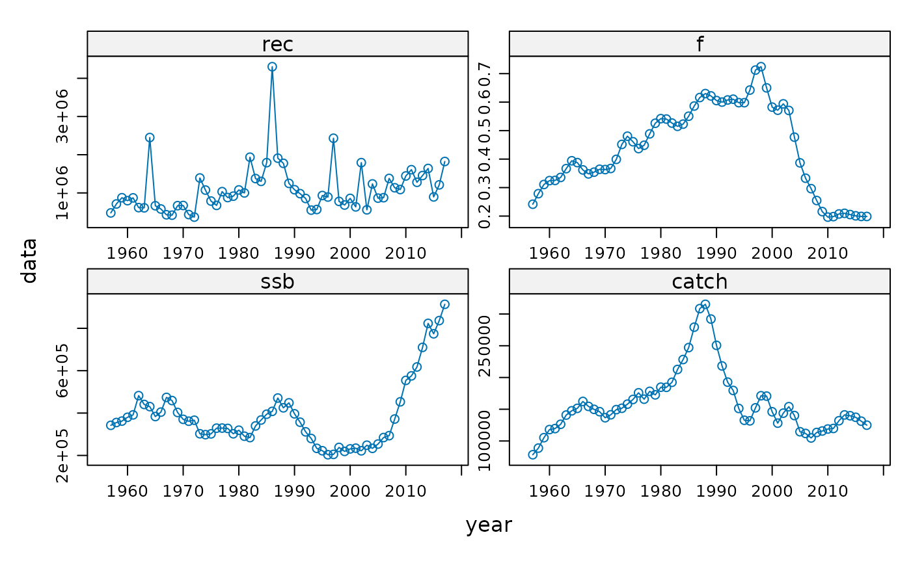

FLQuants is a list of FLQuant objects. It is very
similar to the standard list class. It implements a lock mechanism
that, when turned on, does not allow the user to increase or decrease the
object length. The elements of FLQuants must all be of class
FLQuant.
FLQuants(object, ...) # S4 method for ANY FLQuants(object, ...) # S4 method for FLComp FLQuants(object, ...) # S4 method for missing FLQuants(object, ...) # S4 method for list FLQuants(object, ...) # S4 method for FLQuants FLQuants(object, ...)
| object | unnamed object to be added to the list |
|---|---|
| ... | other named or unnamed objects |
The data. list.
Names of the list elements. character.
Description of the object. character.
Lock
mechanism, if turned on the length of the list can not be modified by adding
or removing elements. logical.
A constructor method exists for this class that can take named arguments for any of the list elements.
The FLR Team
# Compute various FLStock indicators data(ple4) fqs <- FLQuants(ssb=ssb(ple4), catch=catch(ple4), rec=rec(ple4), f=fbar(ple4)) summary(fqs) #> An object of class "FLQuants" #> #> Elements: ssb catch rec f #> #> Name: ssb #> dim : 1 61 1 1 1 1 #> quant: age #> units: t #> #> Min : 203390.9 #> 1st Qu.: 290780.2 #> Mean : 387524 #> Median : 361610.5 #> 3rd Qu.: 430475.2 #> Max : 913289.6 #> NAs : 0 % #> Name: catch #> dim : 1 61 1 1 1 1 #> quant: age #> units: t #> #> Min : 78360.36 #> 1st Qu.: 131216.1 #> Mean : 160583.9 #> Median : 149389.9 #> 3rd Qu.: 175881.4 #> Max : 315244.7 #> NAs : 0 % #> Name: rec #> dim : 1 61 1 1 1 1 #> quant: age #> units: 1000 #> #> Min : 367450 #> 1st Qu.: 674010 #> Mean : 1108991 #> Median : 915553 #> 3rd Qu.: 1375880 #> Max : 4303680 #> NAs : 0 % #> Name: f #> dim : 1 61 1 1 1 1 #> quant: age #> units: f #> #> Min : 0.1964252 #> 1st Qu.: 0.3251898 #> Mean : 0.4379137 #> Median : 0.448585 #> 3rd Qu.: 0.5824118 #> Max : 0.72432 #> NAs : 0 % xyplot(data~year|qname, fqs, type='b', scales=list(relation='free')) 